8 of 8 pages in Products were looked at, each at 1280 and 390 (captures at commit 4064a78, navigated via the menu as sales.manager), against the wireframe for every page. Result: 0 P1, 4 P2, 11 P3. Every page lets the user finish its task at both widths. I would show the list pages and the two small config editors to a customer; I would not show Product_NewEdit until the Category rule and the missing image/Vendor-prices controls are settled (they are decisions, see P2-1, P2-2). Not fixed here, as already known and not re-reported: the demo-user switcher at the right edge. The lg-* wireframe classes are absent by decision OI-6 and are not findings.
Not measured:tests/e2e/design-audit.js was not run in this pass, so class, a11y and overflow-at-three-widths are UNMEASURED. Empty-state of each grid, submitting forms with required fields empty, hover/focus, and the Archive result were not exercised; this look is one still per page and width. The data seen is the journey fixture (one product, one pricelist with no rules), so the wireframe's sample rows are not comparable.
Per-page verdicts (all Judged)
Products.Product_Overview (vs wireframe) 4c: purpose clear (product list, primary New, row opens editor). Columns b2-b8 all present; Sales price right-aligned. Divergence: wireframe b1 asks for four filters plus search (type, can be sold, can be purchased, category); the live grid has only the Product type drop-down (P2-3). The single row is the journey fixture 'Journey Chair' with blank Internal reference, Category and Cost (data, P3). Pager '1 to 1 of 1'. 'Select' placeholder in the filter is clipped at its bottom (P3, theme-pinned header row). 390: columns scroll sideways, Name is truncated to 'Journ...' and only four columns are visible; usable by scrolling (P3).
Products.Product_NewEdit (vs wireframe) 4c: logical, one primary Save, Archive secondary. Four sections (General, Sales, Purchase, Inventory) in the drawn two-column order, all 26 bindings except b3 image and the Vendor prices link are present. Missing: image uploader (P2-2), Vendor prices link (P2-2), required markers (P2-1). Category is drawn as required but the record is blank and saved (P2-1). Sales price and Cost are left-aligned (wireframe right-aligns numbers; P3). The H1 shows 'Journey Chair', the wireframe '[ref] name' (reference is blank). Label column: 'Customer lead days' and 'Purchase description' wrap to two lines and the Internal notes label column is wider than the section columns above it (P3). 390: single column in the right order, Save/Archive under H1, usable; page is 2570px tall (acceptable for a 26-field form).
Products.Pricelist_Overview (vs wireframe) 4c: logical; Name/Currency/Active as drawn, 'Public Pricelist EUR Yes'; the wireframe's second row 'Wholesale' is not in the data. Active is plain text 'Yes' (reuse gap, pill). The Name filter box is taller than its input and 'Ab' button is larger than the header (P3). 390: Active column is off-screen (grid scrolls sideways), only Name and Currency visible (P3).
Products.Pricelist_NewEdit (vs wireframe) 4c: logical; Name, Currency, Sequence present; Price rules lines present with '+ Add a line'. The pricelist has no rules in the data, so the lines region reads 'No items found' (true here); the wireframe's two sample rules are not seeded (P3). The Price rules header row at 1280 is crammed: 'Computation' and 'Fixed price' touch, the Min quantity / Discount percent labels wrap and the header columns do not share a visible grid with each other (P3, nothing to compare against because there are no rows). 390: header hidden, 'No items found' and '+ Add a line'; the per-field phone labels could not be seen because there are no rows.
Products.UoMCategory_Overview (vs wireframe) 4c: logical; Name column with filter; three categories (Unit, Weight, Working Time) against two drawn (data). Single column fills the width; New primary. 390 identical and fully readable. No findings above P3 (reuse: none applicable).
Products.UoMCategory_NewEdit (vs wireframe) 4c: logical; Category Name plus Units line editor with Name, Unit type, Factor, Rounding, Active, Remove. All wireframe columns present. Factor for Dozens shows 0.08 where the wireframe shows 0.0833 and the seed is 0.0833333333 (P2-4). Unit type drop-down is clipped to 'Refe...' / 'Bigg...' at 1280 (P3). Remove has no confirmation (it deletes a unit that products may use; the delete may be refused by the model, not verified; P3). 390: every input carries its label (Core fix applies), Active tick label is under the box (P3), usable.
Products.ProductCategory_Overview (vs wireframe) 4c: logical; Full name column with filter, three rows ('All' is extra against the wireframe; data), New primary. 390 fully readable. No findings above P3.
Products.ProductCategory_NewEdit (vs wireframe) 4c: popup from the second row ('Saleable'), Name auto-selected, Parent 'All', Save and Cancel (wireframe says Discard; wording, P3). Both fields present and populated. Proportions fine at 1280. 390: dialog fills the width and is usable; as on Core, the dialog header overlaps the top bar under the dim layer (P3).
P1
None found. No page was seen where a user cannot complete a task, no blank displayed system value, no grid without a message, and the first-row popups/overviews open the right pages.
P2
[P2] Products.Product_NewEdit — elements cmbProductCategory, txtName, product type, unit (Judged). Wrong: the wireframe draws Name, Product type, Category, Purchase unit and Unit as required (b4, b7, b9, b21, b23). In the app none shows a required marker, and Category is blank on the saved Journey Chair, so a product exists with no category although the design says it must have one (Product_Overview shows the empty Category cell). Root cause: Products.VAL_Product (MDL 405) checks name, unit, purchase-unit category, service/inventory and negative prices but not Product_Category; the combobox has no required setting and no required-indicator class. Whether Category is truly mandatory is an intent question for ba-agent.
[P2] Products.Product_NewEdit — wireframe b3 image uploader and the ‘Vendor prices’ link (Judged). Wrong: the page has no product image area and no link to vendor prices; both are drawn. A user cannot attach a picture or reach vendor prices from the product. Root cause: not in MDL 407 (no image widget, no link button). The vendor-price overview belongs to a later module and the link may be a deliberate forward reference; the image entity is Products.ProductImage in the wireframe binding. Needs a decision: build, or record as deferred.
[P2] Products.Product_Overview — element gridMain filters (Judged). Wrong: wireframe b1 asks for filters on type, can be sold, can be purchased and category, plus a search box. Live has only the Product type drop-down; with hundreds of products the user can neither search by name or reference nor narrow by category. Root cause: MDL 406 attaches dropdownfilter fProductType to one column only; Name, Internal reference, Category and the two booleans have no filter widgets.
[P2] Products.UoMCategory_NewEdit — element lntxtFactor (textbox, DecimalPrecision 2) (Judged). Wrong: Dozens is stored as 0.0833333333 and displays as 0.08; the wireframe shows 0.0833. A conversion factor shown at two decimals misleads (1/12 reads as 1/12.5), and a user editing and saving this row may write the rounded value back, making quantity conversions wrong. Not verified at runtime. Root cause: factor and rounding share the same two-decimal format in MDL 403 (lines 84-85); a ratio needs more precision (the model value has 10 decimals).
P3
Products.Product_Overview / Pricelist_Overview / UoM / ProductCategory overviews — gridMain header filters (Judged). Wrong: the filter row is a taller box than the header, with the ‘Ab’ button and clipped ‘Select’ placeholders. Root cause: theme-pinned header row height, as on Core Tax_Overview.
Products.Product_Overview @390 — gridMain (Judged). Wrong: only four columns visible; Name truncated to ‘Journ...’ and Sales price/Cost/Unit need a sideways scroll. Root cause: seven columns with no phone priority; the scroll is the Core fix, truncation remains.
Products.Pricelist_Overview @390 — Active column off-screen (Judged). Root cause: same grid scrolling; the status the page exists to show is the one that is hidden.
Products.Product_NewEdit — txtSalesPrice, txtCost, txtWeight, txtVolume (Judged). Wrong: numbers are left-aligned in the inputs; the wireframe right-aligns (is-num). Also label wrapping at 1280 (‘Customer lead days’, ‘Purchase description’) and a label column for Internal notes that differs from the sections above. Root cause: label column width per layout grid; no num class on inputs.
Products.Product_NewEdit — btnArchive1 (Judged). Wrong: Archive sits next to Save with default weight and no confirmation; the product leaves pick lists. Root cause: button calls ACT_Product_Archive directly (MDL 407 line 24). Result not exercised.
Products.Pricelist_NewEdit @1280 — Price rules header (gridLinesHead) (Judged). Wrong: header labels are crammed (‘Computation’ touches ‘Fixed price’), two labels wrap, and with no rows the section shows only ‘No items found’ so the line editor was not seen with data. Root cause: eight narrow columns in a layoutgrid header; the data has no rules. Re-look once a rule exists.
Products.UoMCategory_NewEdit — cmbUoMType (Judged). Wrong: ‘Refe...’ / ‘Bigg...’ at 1280 (the full text shows at 390). Also Remove has no confirmation, and on phone the Active label sits under its tick box. Root cause: column width 2 of 12.
Products.ProductCategory_NewEdit — popup (Judged). Wrong: button reads Cancel where the wireframe says Discard; at 390 the dialog header overlaps the top-bar menu under the dim layer (same as Core Tax_NewEdit). Root cause: wording; popup layout inherited from Core.
Products.* data (Judged). Wrong: the review DB holds one fixture product with blank reference/category/cost and one pricelist with no rules, against two and two in the wireframes; three UoM and product categories against two. Root cause: seed (413) plus journey leftovers; not a model defect, but several wireframe fields (Internal reference, Cost, rule rows) were therefore not seen populated.
Reuse gaps
Pricelist_Overview Active (‘Yes’) and Product_Overview Product type (‘Goods’) are plain text although the built theme has pill pill-ok|info recipe classes. The wireframes also show plain text, so this is a suggestion. (P3, Judged)
The page-head block (ctnPageHead / page-head-title / page-head-actions) is hand-copied into all 8 pages instead of one snippet. (P3, Judged)
Pricelist_NewEdit Price rules and UoMCategory_NewEdit Units each build a grid as a layoutgrid header plus a list view of inputs, the same pattern as Core Sequence_Overview and PaymentTerm; the phone labels were fixed per page, but a shared snippet would keep them consistent. (P3, Judged)
What the harness cannot see
Stage 3 proves only that the 15 journey assertions ran on the flows journeys/Products.journey.json walks; absent is not green. The harness cannot see any page off the literal click path: a journey that clicks a row never inspects pages it does not open, and Pricelist_NewEdit with rules, UoM editing a factor, and the category popup are not asserted for rendering. It cannot see visual and styling regressions even on a covered page, because text-presence and DB-state assertions pass equally on a styled and an unstyled render. It cannot see cell-level rendering such as truncated names, a clipped Unit type drop-down, a factor shown as 0.08, or the 390px layout. This look is a still capture per page: hover, focus, validation messages, the Archive outcome, empty states and the live overlay were not seen.
Screenshots
Products.Product_Overview
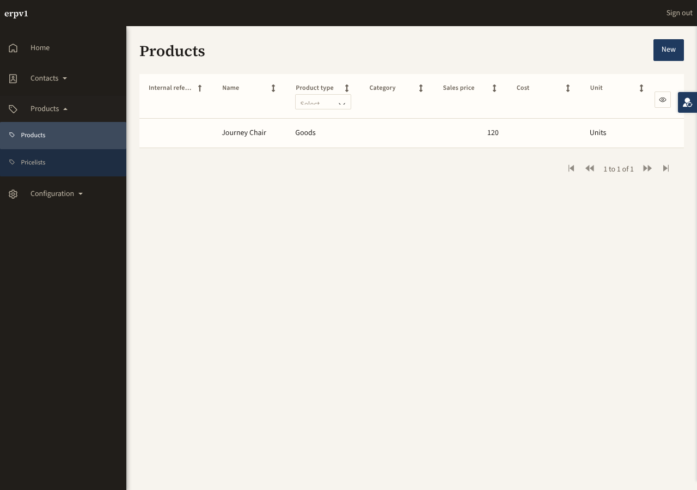
Products.Product_Overview @ 1280
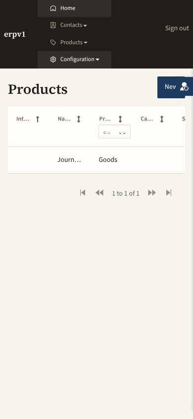
Products.Product_Overview @ 390
Products.Product_NewEdit
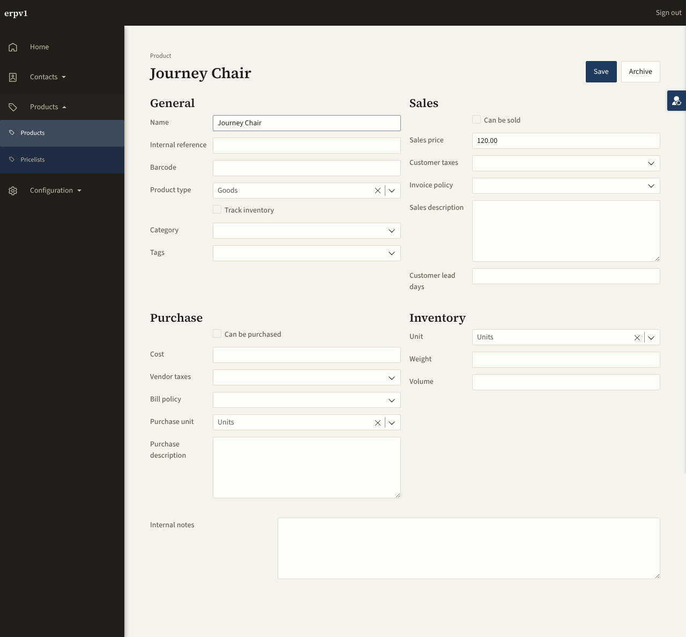
Products.Product_NewEdit @ 1280
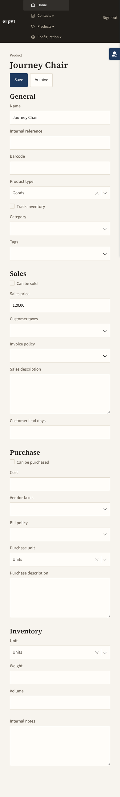
Products.Product_NewEdit @ 390
Products.Pricelist_Overview
Products.Pricelist_Overview @ 1280
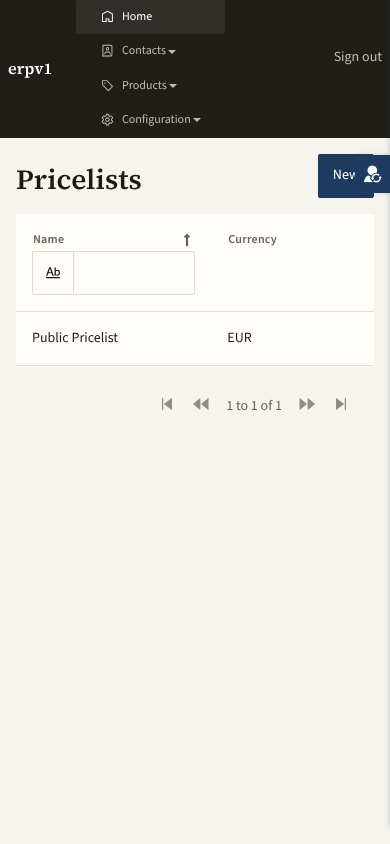
Products.Pricelist_Overview @ 390
Products.Pricelist_NewEdit
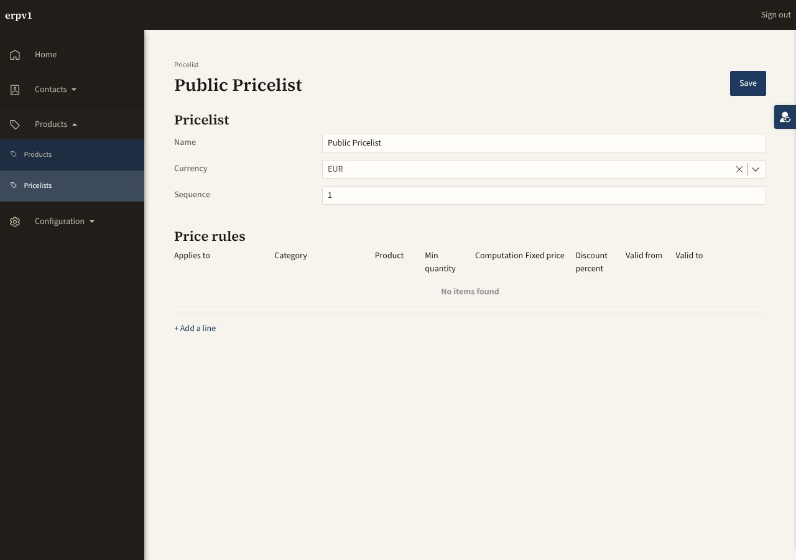
Products.Pricelist_NewEdit @ 1280
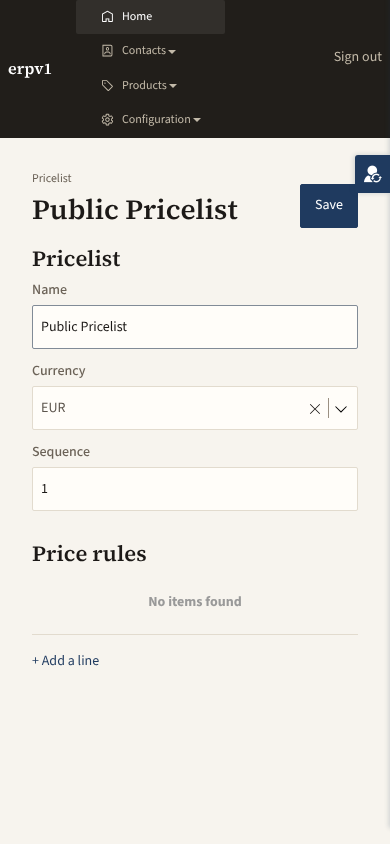
Products.Pricelist_NewEdit @ 390
Products.UoMCategory_Overview
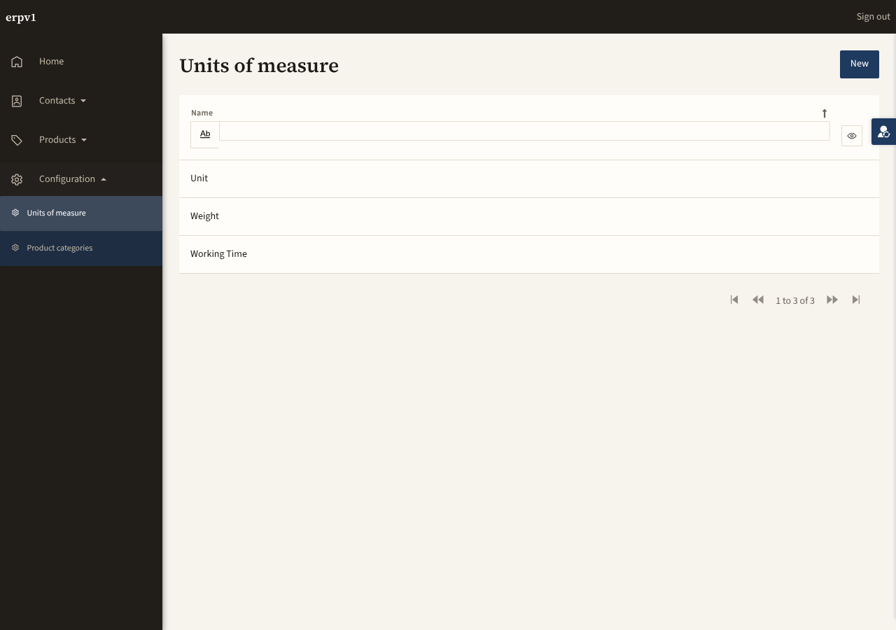
Products.UoMCategory_Overview @ 1280
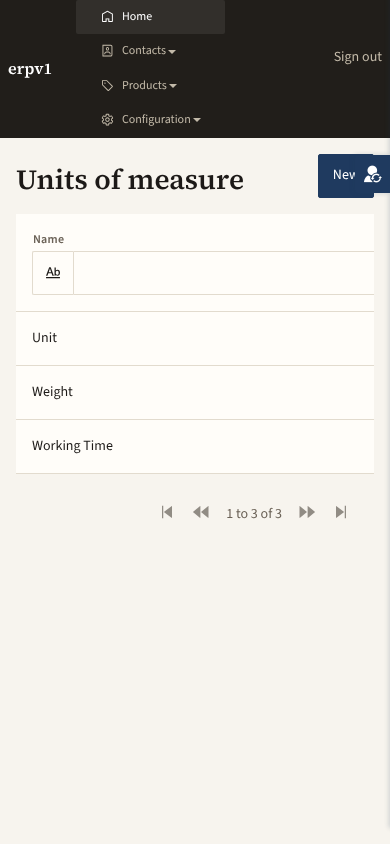
Products.UoMCategory_Overview @ 390
Products.UoMCategory_NewEdit
Products.UoMCategory_NewEdit @ 1280
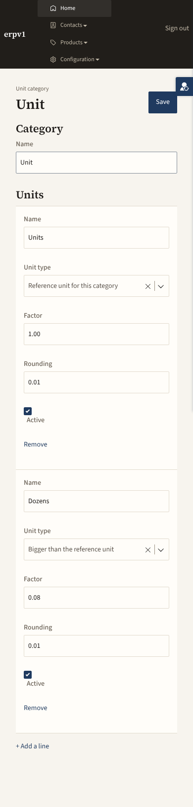
Products.UoMCategory_NewEdit @ 390
Products.ProductCategory_Overview
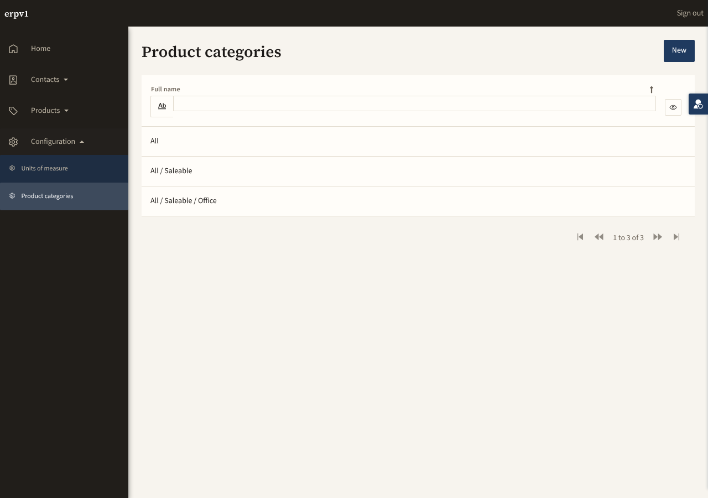
Products.ProductCategory_Overview @ 1280
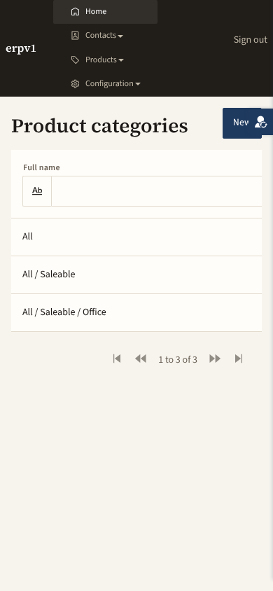
Products.ProductCategory_Overview @ 390
Products.ProductCategory_NewEdit
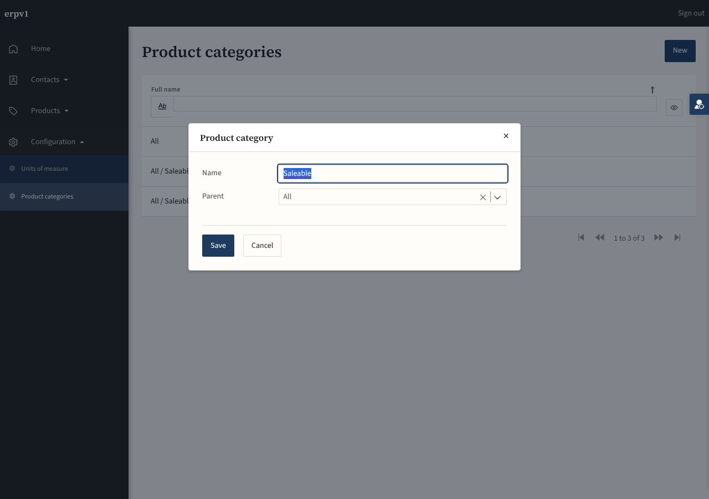
Products.ProductCategory_NewEdit @ 1280
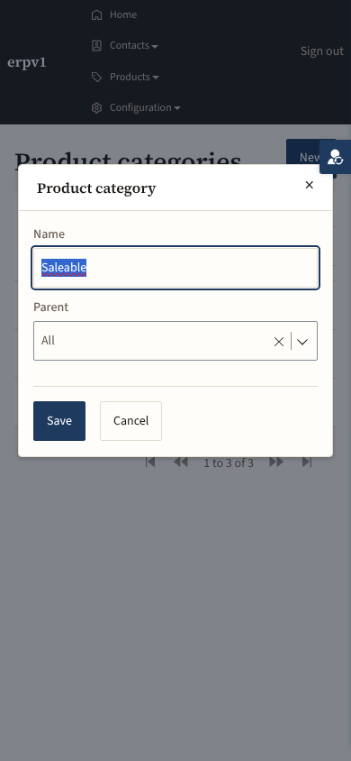
Products.ProductCategory_NewEdit @ 390
Addendum 1 — re-look after the P2 fixes
Products · 8 of 8 pages re-shot at 1280 and 390 · stage 3: 1 of 1 journeys re-run (15/15)
Each earlier finding, as seen in the new shots (Judged, pixels). Data changed since the first look: Product_Overview now holds 11 rows (four real products plus seven ‘Journey Chair’ fixtures) and Product_NewEdit was captured on ‘Cable Pack’, a fully populated record.
P2-1 Category required: fixed (as Addendum 1) — the newest Journey Chair row shows Category ‘All’; the older fixtures stay blank (data). No required marker is drawn on the form (P3 open) (Products.Product_Overview-1280, Products.Product_NewEdit-1280).
P2-2 image uploader / Vendor prices link: still open, deferred — neither is on Products.Product_NewEdit-1280.
P2-3 Product_Overview filters: fixed for attribute columns, category/unit still absent — filters on Internal reference, Name, Product type, Sales price, Cost; none on Category or Unit; the drawn can-be-sold / can-be-purchased filters are absent (Products.Product_Overview-1280).
P3 filter row clipping: still open (Product type and Pricelist Active ‘Select’ clipped, Products.Product_Overview-1280, Products.Pricelist_Overview-1280). Product_Overview @390 truncation (‘Int…’, ‘Cable …’): still open. Pricelist_Overview @390 Active column off-screen: still open (only Name and Currency fit).
P3 Product_NewEdit numbers left-aligned, label wrap (‘Customer lead days’, ‘Purchase description’), wider Internal notes label column: still open (Products.Product_NewEdit-1280). The 26 bindings otherwise all populated on Cable Pack, Weight and Volume blank (data). At 390 Save/Archive sit beside the H1 against the switcher (Products.Product_NewEdit-390).
P3 Archive without confirmation: not exercised, still open. Price rules header crammed at 1280 (‘Computation’ touches ‘Fixed price’): still open; the pricelist still has no rules, so only ‘No items found’ was seen (Products.Pricelist_NewEdit-1280). Re-look needs a rule.
P3 Unit type clipped (‘Refe…’, ‘Bigg…’) at 1280, Remove without confirmation, Active label under the box at 390, and the line-editor checkbox repeating its caption ‘Active’ under the ‘Active’ header: still open (Products.UoMCategory_NewEdit-1280/-390).
P3 ProductCategory popup: still open — Cancel vs Discard, dialog header overlaps the top bar at 390 with the page title showing behind it (Products.ProductCategory_NewEdit-390).
Reuse gaps (Active/Product type plain text, hand-copied page-head): unchanged.
New P2 (seen on every overview page of the module at 390): the demo-user switcher at the right edge sits on the primary action: the New button reads ‘Nev’ on Product_Overview, Pricelist_Overview, UoMCategory_Overview and ProductCategory_Overview (Products.*_Overview-390.png) and the Save button touches it on every NewEdit page. At 1280 it is in the gutter. Same cause and same finding as Core Addendum 2 P2-4; the Products first look recorded the switcher as known and not re-reported, but it now hides part of the primary action. Cause not verified (stacked 4-row phone menu pushes the page head onto the switcher).
New P3: Products.Product_Overview-1280 shows seven ‘Journey Chair’ fixtures with blank reference, category and cost among four real products; same journey-teardown leak as Core Tax.
New P1: none. Not measured: design-audit.js not run; empty states, validation and Archive outcome not exercised.